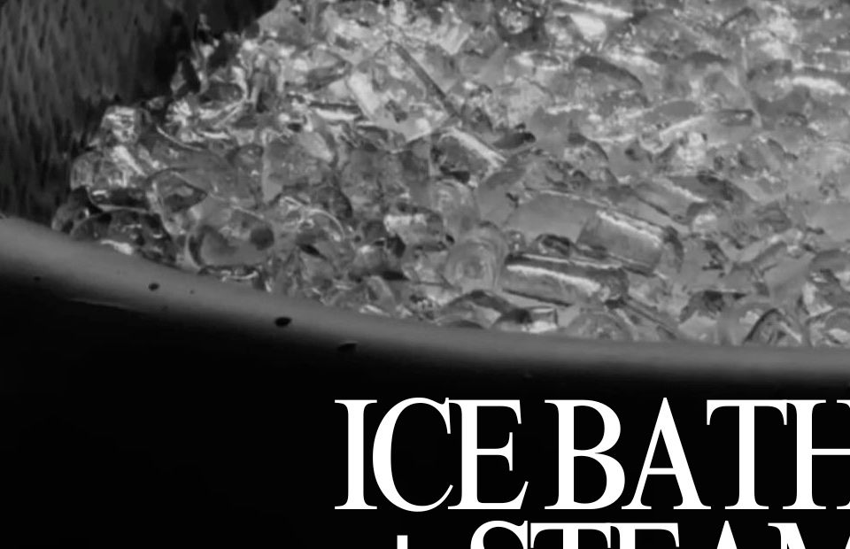
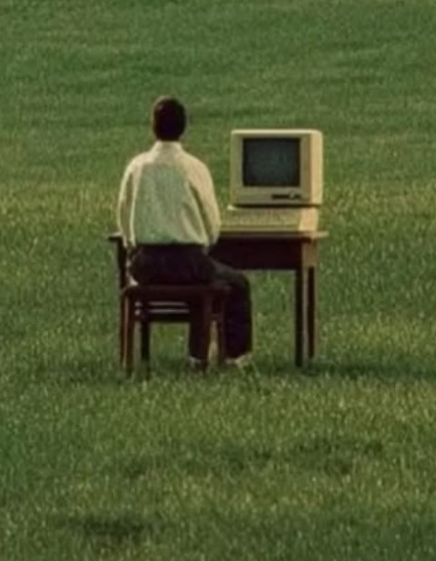

Arrive as a visitor.
Leave as a regular.
Core Culture is a training club practised like a ritual: strength without spectacle, water at four degrees, evenings that end in conversation. Take the tour slowly. Nothing here is urgent — everything here matters.
The doors open early, on purpose.
Five-thirty, before the city insists on itself. Park without circling. Hang your coat beside somebody's chalk bag. The lighting is warm, the air conditioning is quiet and industrial, and nobody will ask what you're training for.
Strength, practised quietly well.
Twelve racks, calibrated plates and machines chosen for biomechanics rather than theatre. Coached barbell hours from the first pull. Hybrid athletes prepare for HYROX on sled tracks and ergs; treadmills screen entire series for the long, slow miles.

Three minutes at four degrees.
The coldest room in the sanctuary is also the stillest. Steel, ice, steam next door. Sit down, breathe slowly enough to bore yourself calm, and let the cold do the coaching. Excuses, you will find, do not fit in the water.
Restoration is a skill.
Practise it here. Four counts in, hold, six counts out — the same breath you will need at the bottom of a heavy lift, or at the edge of the tub. Start the circle. Follow it for a minute. The whole club runs on this rhythm.

The workout ends. The evening doesn't.
Work-lift balance: meetings before the session, people after it. The lounge keeps the chairs soft, the coffee coming and the opinions warm. Most memberships are justified here — nobody counts your sets at dinner.
Residency, from one week.
Every residency includes the whole sanctuary — iron, engines, remedy wing, lounge and the company that comes with it. Parking is solved; the air conditioning is quiet and serious about it.